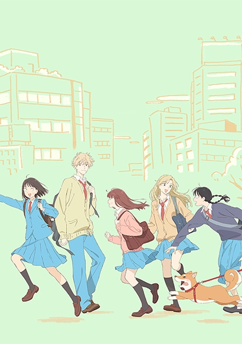
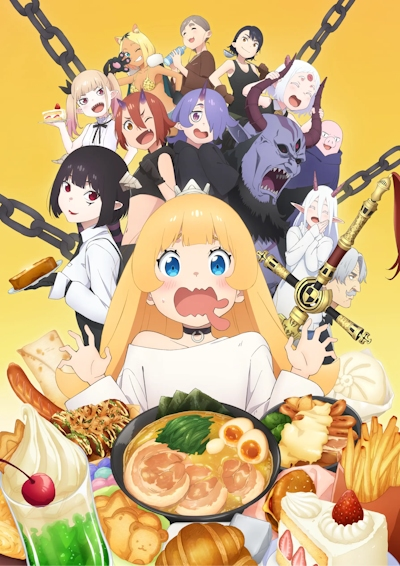
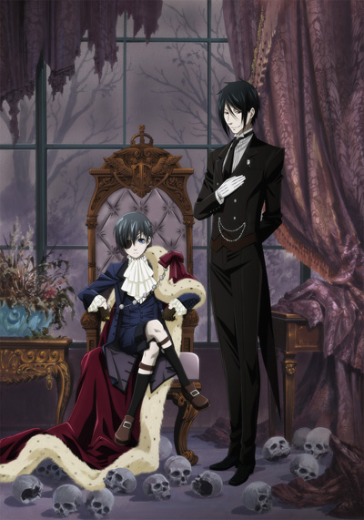
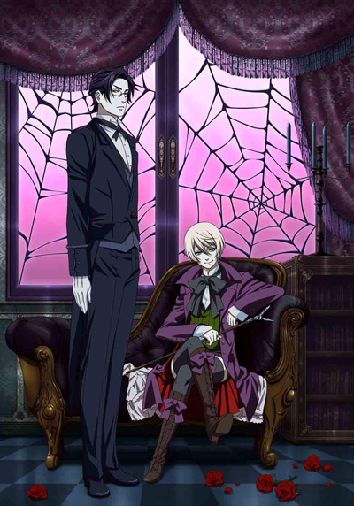

Books i'm currently reading / have read.
Currently watching. I'll probably add these to the table with links 'n all after watching.
Have watched:
| Cover | Title | Something.. |
|  | Skip and Loafer | One of the best animes i've ever seen. The whole thing is wholesome and is very comfortable to watch. It's slice of life. I would really recommend to watch this in small chunks rather than whole thing at once. some SOL series are very good binge-able series while with others, you need to take some time between. It may be time to think about what you just saw or time to not think everything is the same and boring. Do something else instead! 10/10 highly recommended. |
|  | `Tis Time for "Torture," Princess | Very wholesome. Very nice. However, i recommend you to take this in moderation; one, perhaps two episode every day or two. This show is to be enjoyed slowly. |
|  | Kuroshitsuji | Amazing story. Starts off as yuri bait, but has an excellent story. Perfect. The first 12 episodes may be world building, but the end 12 episodes are bangers, one after another. Every episode reveals a mini story. And it all harmonizes at the end. Wonderful, bingeable :-D |
|  | Kuroshitsuji II | and all of it's sequels. |